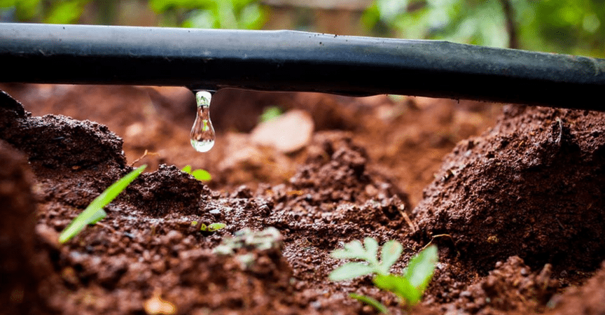

Los sistemas de riego permiten distribuir el agua de manera eficiente en cultivos agrícolas, mejorando la productividad y reduciendo el desperdicio. Este sitio te mostrará los principales tipos de riego, la tecnología que los respalda y sus beneficios para la agricultura sostenible.
